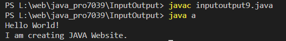

Get all characters from the file and display on the screen
Code:-
import java.io.BufferedReader;
import java.io.FileReader;
import java.io.IOException;
class a {
public static void main(String[] args) {
// Replace 'filename.txt' with the actual filename of your file
String fileName = "text.txt";
try {
// Create a BufferedReader object to read the file
BufferedReader br = new BufferedReader(new FileReader(fileName));
// Read each character from the file
int currentChar;
while ((currentChar = br.read()) != -1) {
// Convert the character to its corresponding ASCII value and print it on the screen
System.out.print((char) currentChar);
}
// Close the BufferedReader object after reading the file
br.close();
} catch (IOException e) {
// Print an error message if the file could not be read
System.out.println("An error occurred while trying to read the file: " + e.getMessage());
}
}
}
Output:-
